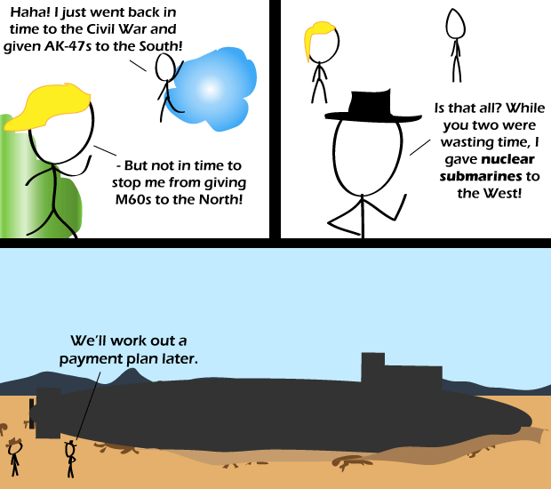

Comic JK 640
When I Feel Like It
⇤
<
?
>
⇥

⇤
<
?
>
⇥
Forum
.
RSS
.
Digg
.
Facebook
.
Reddit
.
Twitter
.
Stumbleupon
Enter your thoughts on number 640 here. Please, no spamming, trolling, or launching submarines in the desert. Why is there a gob of yellow slime on his head? SHHHHHHHHHHEEEEEEEEEEEEEEEEEEEEEEEEEEEEEEEEEEEEEEEWWWWWWWWWWWahahahahahh... Dundundun dundundun dundundun dundundun Doo-wah dooooooooo..., doo do doooooooo... >Ummm, wat? >>Doctor whoooves! >>> Dubstep. I don't think it's technically wasting time if you time travel to do it. >Another comment better than the comic. Aren't we a witty crew ;] >>( at least one Superman comic in the late 1970's held the notion that a time-traveller could spend however long they wanted in a different era: on returning to "their own time", they would return to the same physical age they were when they left - **yet retain their full set of memories** - which would seem to be a tad inconsistent, admittedly... ) >>> You expect consistency from DC Comics productions? Even Marvel has trouble with that, and they have a slightly more contigious universe. (I'm sorry, but where exactly is Gotham City? How about Superman's city...whatever it's called, if anything.) >Can't use the sub, but could still nuke the CRAP out of stuff. Wait is this a nuclear submarine like the 20 warheads per missile type, or just a nuclear POWERED sub that uses torpedoes? I sense ambiguity... >>well, there is the middle-ground: nuclear-powered hunter-killer subs carry Tomahawk cruise missiles with conventional warheads... some might question the aptness of a weapon called a Tomahawk in that geographical location in that era... ( Tomahawk is the transliteration of a word used by the Powhatan, who lived in the area that is modern-day Virginia... ) >>>Judging from the scale, I'd say this isn't the mobile stealth ICBM silo. Those subs have a pretty decent sized crew, and ICBMs are pretty damned big. I'd say this'd be a torpedo sub or a sub-hunting sub. Shout out to Harry Turtledove? >Guns of the South was a good book Shout out to Dr Who ? - in the 1965 story "The Time Meddler", a rogue Time Lord plans to use "ATOMIC BAZOOKAS" in 1066 to destroy the incoming Viking invasion fleet, in the belief this will allow King Harold to concentrate on the Normans, and so win the Battle Of Hastings... ( The Battle Of Stamford Bridge against said Viking invasion was actually a *major*, *incredible* victory for King Harold... and would be remembered as such, if it wasn't for the unfortunate business at Hastings, shortly after... ) >His reasoning was that, although that first battle was a victory, it meant his forces were depleted and tired when the Normans came around. Yes Harold's guys won, but then they didn't get time to rest. >>Well that's pretty much what I said :) but I deliberately said "belief" as mainstream historians point out the Saxons were winning Hastings until quite late in the battle - a lot of analysis cut too short is that they would likely have won if they had remained behind the shield wall; it wasn't a question of how fatigued the Saxons were, it was apparently more a question of discipline and maintaining control in the heat of battle... Isn't hat guy XKCD's thing? >It's public domain xD >>Dammit Randall, get out of my comicjk. Wait, on second thought... don't! >>>More importantly, I know I've seen this /exact/ comic before. Hah! I took nukes back to the Miocene! > Hah! I took nudes back to the Miocene! >> Hah! I took noobs back to the Miocene! >>>Hah! I took doobs back to the Miocene! >>>>Hah! I took the Miocene back to around 20 million years ago! >>>>>Ah, that takes me back! Why not just install rocket launchers on raptors? >Why bother? They're incredibly deadly anyway. Just bring a squad forward in time and train them a bit, so they don't eat your own side. Far better than drones! >>Have you ever TRIED to install a rocket launcher on a raptor? Not so easy, really. >>>Have you ever tried a raptor? They're not easy. >>>>That's what Claw Carver said too... ( good grief, I've just realised how old that reference is: so old they didn't call it a raptor, they called it a "terrible claw" ) Is there a tense inconsistency in the first panel? Yep there sure is >I don't know. I haven't gave it much thought. >> +1 >>>Don't you recognise the future semi-conditional modified subinverted plagal past subjunctive intentional tense? Brilliant. The tri-civil war. With time travel. If so, I say we give the homo reptilians fusion reactors.